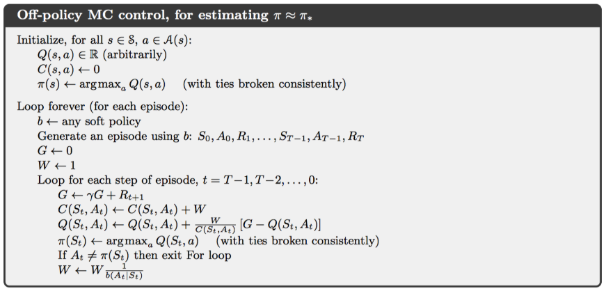
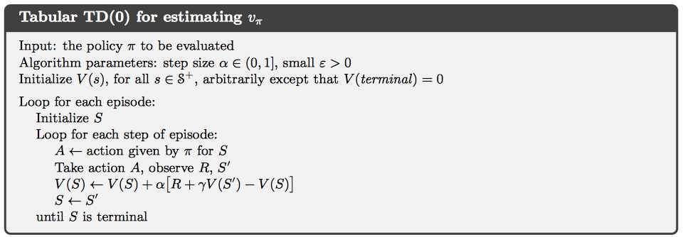
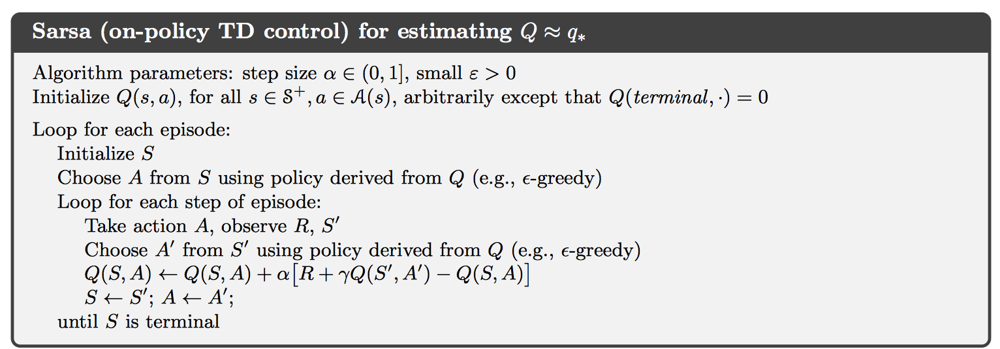
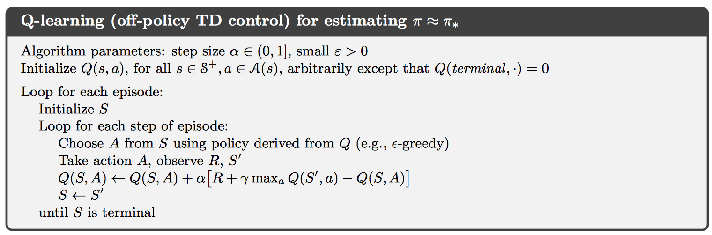

这是关于论文的笔记。
该论文设计了一个具有层次结构的SDN，以及一个基于RL的进化式路由算法QAR(Qos-aware Adaptive routing)。用到的东西不是很新奇，但是在当时也许相当于开创了一个领域。
QAR使用SARSA算法，使用Qos设计Reward函数。
为了进行仿真，复现论文中的结果，为此学习了Omnet++框架，并且自己手搓了SDN网络协议。
预备知识
Temporal-Difference Learning
TD learning是一种将MC和DP结合起来的方法。相对于MC方法，其特性是不必等待一次完整迭代结束之后才进行更新，而是没进行一次决策就根据下一步转移到的状态进行更新。

回顾first-visit MC方法，可以注意到只有在首先得到一组遍历过的状态行为集之后才可以进行更新；但是对于TD方法，每一次状态转移都会进行更新，显而易见的区别在于，一次迭代当中可能对同一状态有多次访问，因此有更好的实时响应。伪代码见下图：

由于TD方法是根据估计值对Q进行再估计，而不是使用观测值进行更新，因此称为bootstrapping的。
SARSA
该算法实际上是$(S_t, A_t, R_{t+1}, S_{t+1}, A_{t+1})$的简称。只需要将TD(0)中的参数V替换为Q，即可得到SARSA的算法框架：

可以很明显地观察到，这是on-policy的算法，没有将行为策略与目标策略分离，exploration交给了$\epsilon-greedy$部分。
Q-learning
如果在更新的时候不使用$\epsilon-greedy$算法得到下一个行为直接进行更新，因为此时与策略无关，那么就可以得到一个off-policy的算法。算法框架：

SDN: software defined networks
软件定义网络，这是一种网络管理技术，并且能够通过对网络进行编程以监管网络以提高其性能。SDN解决了传统网络的去中心化和复杂的问题。SDN通过将网络中的信息集中到一个组件中，分离数据包的转发(data plane)以及路由的决策(control plane)这两个问题。control plane中包含了一个或多个控制器，它们作为SDN网络的决策中心，共享信息。
该论文中设计出的是当时已知的第一个进化式路由算法。
omnet++
使用NED后缀的文件定义组件以及组件之间的连接
使用cc后缀的文件进行网络的初始化，以及组件的行为
使用ini后缀的文件表示希望仿真NED文件中的哪一个网络，因为其中可能包含有多个网络
不知道环境变量哪里出现了问题，每次启动omnet之前，必须在~/omnet5.4.1这个文件夹中配置环境变量. setenv，之后才能够启动omnet
Official Guide
下面是通过官方文档学习该框架的使用笔记
在
.ini文件中添加record-eventlog = true，可以在result目录下生成日志图文件，记录信息传递的形象化信息；注意，在下一次运行之后，将会对该文件进行覆盖。类似c++中使用cout进行debug，这里可以使用EV来输出相关的信息
可以使用
bubble(string);方法在仿真图上面输出相关信息下面展示一个定义class的模版
1
2
3
4
5
6
7
8
9
10
11
12
13
14/**
* In this class we add a counter, and delete the message after ten exchanges.
*/
class Txc3 : public cSimpleModule
{
private:
int counter; // Note the counter here
protected:
virtual void initialize() override;
virtual void handleMessage(cMessage *msg) override;
};
Define_Module(Txc3);不知道为什么要定义为虚函数，以及重载类型；但是注意，下面的
Define_Module()，这是一个宏，用于对类进行注册，以后在该平台上需要默认进行这一行为下面展示对其中方法的定义
1
2
3
4
5
6
7
8
9
10
11
12
13
14
15
16
17
18void Txc3::initialize()
{
// Initialize counter to ten. We'll decrement it every time and delete
// the message when it reaches zero.
counter = 10;
// The WATCH() statement below will let you examine the variable under
// Tkenv. After doing a few steps in the simulation, double-click either
// `tic' or `toc', select the Contents tab in the dialog that pops up,
// and you'll find "counter" in the list.
WATCH(counter);
if (strcmp("tic", getName()) == 0) {
EV << "Sending initial message\n";
cMessage *msg = new cMessage("tictocMsg");
send(msg, "out");
}
}WATCH属于辅助功能，添加后可在列表中显示；注意继承了cSimpleModule的类，可以使用getName()方法得到组件对应的名称，该名称在声明的时候定义.ini文件中可以对网络中的参数进行设置，并且遵循正则表达式，将对于所有满足条件的变量设置使用时的格式大概为
网络名.组件名.参数名 = value下面开始介绍如何处理结点内的延迟
1
2
3
4
5
6
7
8
9
10
11
12
13
14
15
16
17void Txc6::initialize()
{
// Create the event object we'll use for timing -- just any ordinary message.
event = new cMessage("event");
// No tictoc message yet.
tictocMsg = nullptr;
if (strcmp("tic", getName()) == 0) {
// We don't start right away, but instead send an message to ourselves
// (a "self-message") -- we'll do the first sending when it arrives
// back to us, at t=5.0s simulated time.
EV << "Scheduling first send to t=5.0s\n";
tictocMsg = new cMessage("tictocMsg");
scheduleAt(5.0, event);
}
}初始化函数，当组件名称对应时，将设置仿真起始时间，并且调用
scheduleAt()方法将cMessage对象发送给handleMessage函数，如下所示：1
2
3
4
5
6
7
8
9
10
11
12
13
14
15
16
17
18
19
20
21
22
23
24void Txc6::handleMessage(cMessage *msg)
{
// There are several ways of distinguishing messages, for example by message
// kind (an int attribute of cMessage) or by class using dynamic_cast
// (provided you subclass from cMessage). In this code we just check if we
// recognize the pointer, which (if feasible) is the easiest and fastest
// method.
if (msg == event) {
// The self-message arrived, so we can send out tictocMsg and nullptr out
// its pointer so that it doesn't confuse us later.
EV << "Wait period is over, sending back message\n";
send(tictocMsg, "out");
tictocMsg = nullptr;
}
else {
// If the message we received is not our self-message, then it must
// be the tic-toc message arriving from our partner. We remember its
// pointer in the tictocMsg variable, then schedule our self-message
// to come back to us in 1s simulated time.
EV << "Message arrived, starting to wait 1 sec...\n";
tictocMsg = msg;
scheduleAt(simTime()+1.0, event);
}
}下面开始分析其中的工作原理，能够与
handleMessage函数进行交互的函数有send以及scheduleAt，其中前者用于发送数据，后者用于处理结点内的延迟时间。将结点内的处理延迟随机化的程序，在simple中多设置一个等待时间，并且在
.ini文件中对其设置即可，似乎.ini中的针对变量的初始化，在每次调用par(valueName)之后，都将会重新赋值txc8中包含有停等协议的实现
在处理多结点网络，构建网络的拓扑结构时，需要将out、in这些变量进行++操作，考虑到背后的实现原理，这实际上是理所当然的，因为不可能只使用一个变量out来映射所有的信息发送口，大体框架如下：
1
2
3
4
5
6
7
8
9
10
11
12
13
14
15
16
17
18
19
20network Tictoc10
{
submodules:
tic[6]: Txc10;
connections:
tic[0].out++ --> { delay = 100ms; } --> tic[1].in++;
tic[0].in++ <-- { delay = 100ms; } <-- tic[1].out++;
tic[1].out++ --> { delay = 100ms; } --> tic[2].in++;
tic[1].in++ <-- { delay = 100ms; } <-- tic[2].out++;
tic[1].out++ --> { delay = 100ms; } --> tic[4].in++;
tic[1].in++ <-- { delay = 100ms; } <-- tic[4].out++;
tic[3].out++ --> { delay = 100ms; } --> tic[4].in++;
tic[3].in++ <-- { delay = 100ms; } <-- tic[4].out++;
tic[4].out++ --> { delay = 100ms; } --> tic[5].in++;
tic[4].in++ <-- { delay = 100ms; } <-- tic[5].out++;
}在txc10中包含有处理多结点网络的方法
txc11使用channel特性，简化了上面的传输延迟的定义
txc12使用双向传送的方式，进一步简化网络的定义
txc13使用message特性，通过
.msg文件定义了传输信息的类型，大体框架为1
2
3
4
5
6message TicTocMsg13
{
int source;
int destination;
int hopCount = 0;
}在build之后，将会自动生成对应的
.cc,.h文件；并且将会自动为其中的每个变量生成对应的方法以进行修改，格式为setHopCount(int);也就是说，这些变量都是属于message类的私有成员，只有通过这些方法才可以进行修改
txc14定义每个结点收发分组的数量，并且显示在仿真图上面
txc15给出了统计每个结点上面的统计信息，主要是hopCount的信息
因为可以用柱状图的形式表示，因此很实用
txc16给出了另外一种统计结点上面信息的方式，搭配可视化数据这一章节，其实现的功能比txc15更强大
omnet++ 问题总结
将官方文档中的样例敲进去了，运行不起来，出现了error code:2 no such file or directory，可是实际上样例中的程序都可以运行
我的解决方案：运行的时候不可以run as omnet++ simulation，而是应该run as local c/c++ application，这样就可以正常启动
无法进入debug mode，但是可以正常运行，通过输出中间结果，应该同样可以完成debug的目的
paper 总结
motivation
SDN已经被认可为下一代的网络协议，但是应对大规模网络，其性能并不是很好，仍然需要投入关于拓扑结构和算法的设计。该论文针对此问题，设计出了一个多控制器、Qos感知、含有进化式路由算法的SDN协议。
单控制器组成的control plane：管理整个data plane，在对流量和网络状态的全局可见情况下作出决策；但是限制于单个结点的计算能力，因此不适用规模较大的网络
多控制器的出现很自然，与分治的思想相同，将处理数据的问题交付给子节点进行，父节点进行信息的统合即可；同时还可以利用多核并行处理的提高计算速率。
idea
SDN网络
拓扑结构
控制器由三层构成
slave controller对交换机的数据只读，接收它们的端口状态信息
同时可以缓解I/O前端中过多的控制信息，提供简单的控制
domain controller对交换机具有全权的控制权限，能够通过发送控制信息以修改交换机的状态
super controller连接所有的domain controller，管理整个网络
设立domain controller以及super controller的目的是为了管理流量建立、响应控制行为；而slave controller的目的只是为了减少从不同应用接收控制信息的负担
如果分组的传送在一个domain controller管理下就可以完成，那么不会向super controller传送；如果超过了这个范围，那么将会将分组继续向上传送。
工作流程
- 交换机接收到信息流，如果转发表中包含有对应的目的地址，那么直接进行转发；否则将该流中的第一个分组信息发送给domain controller
- domain controller接收到分组信息之后，首先根据slave controller的信息对当前的网络状态进行更新；使用算法2中描述的流程进行路径规划，得到返回的路线之后将其中包含的交换机的转发表进行更新
- 如果分组的目标地址不在domain controller控制的子网中，那么将分组转发给super controller，其按照算法2规定的流程进行路线规划，之后将需要的路由信息发送给对应的domain controller，更新对应的交换机的转发表
RL算法核心
action selection policy
使用softmax算法进行决策，使用的公式为
$$
\pi_t(s_t, a_t) = \frac{\exp{(Q_t(s_t, a_t)/\tau_n)}}{\sum_{b=1}^n \exp{(Q_t(s_t,b_t)/\tau_n)}}
$$
其中参数$\tau_n$是一个随时间变化的量，可以很明显地观察到，如果该值较大，那么每个决策的权重将会趋于一致，因此此时偏重exploration；如果该值较小，则会相对放大不同决策之间的差别，进而偏重exploitation。该论文中设计的算法，想要做到的是在开始阶段偏重exploration，而逐渐地偏向exploitation。假设学习在有限时间内线性收敛，于是设计出了以下更新参数$\tau_n$的式子
$$
\tau_n = -\frac{(\tau_0 - \tau_T)n}{T} + \tau_0, \ \ \ n\le T
$$
这个做法的默认前提是网络的情况没有发生改变，我认为这里也许可以进行改进：设置一个计数器，在到达某个阶段之后重新设置退火因子
state-action function
使用SARSA算法，公式为
$$
Q_{t+1}(s_t, a_t):= Q_t(s_t,a_t) + \alpha [R_t + \gamma Q_t(s_{t+1}, a_{t+1}) - Q_t(s_t, a_t)]
$$
reward function
这个量综合考虑了传输延迟、排队延迟、丢包率、可用带宽、行为代价这五个因素，具体形式为：
$$
\begin{equation}
\begin{aligned}
R_t&:=R(i\rightarrow j|_{s_t,a_t}) \
&=-g(a_t) + \beta_1(\theta_1 delay_{ij} + \theta_2queue_j) + \beta_2loss_j + \beta_3(\phi_1B1_{ij} + \phi_2B2_{ij})
\end{aligned}
\end{equation}
$$
$delay_{ij}$表示从结点i发送数据到结点j的传输延迟减去与相邻结点的平均传输延迟，是一个相对值。使用$d_{ij}^l$表示从结点i到结点j的传输延迟，取值范围是[0, 100]；$A(i)$表示结点i的相邻结点数量，那么可以将$delay_{ij}$表达如下：
$$
delay_{ij} = \frac{2}{\pi} \arctan(d_{ij}^l - \frac{\sum^{A(i)}{k=1}d{ik}^l}{A(i)})
$$$queue_{ij}$表示从结点i发送数据到结点j的排队延迟减去与相邻结点的平均排队延迟，是一个相对值。使用$d_{ij}^q$表示从结点i到结点j的传输延迟，$N$表示交换机所在子网中的交换机数量，那么可以将$queue_{ij}$表达如下：
$$
queue_{ij} = \frac{2}{\pi}\arctan(d_{ij}^q - \frac{\sum_{k=1}^N d_{ik}^q}{N})
$$$loss_{ij}$表示从结点i发送数据到结点j的丢包率，将该值映射到了[-1,1]，是一个绝对值，与环境无关。可以表达为：
$$
loss_{ij} = 1 - 2 \%\text{loss}_{ij}
$$$B1_{ij}$表示结点i到结点j这条通路中的剩余带宽比例。使用$BW_{ij}^T$表示通路中的总带宽，$BW_{ij}^A$表示通路中的剩余带宽，它们的取值范围是[0, 100]，则有：
$$
B1_{ij} = \frac{2BW_{ij}^A}{BW_{ij}^T} - 1
$$$B2_{ij}$表示结点i到结点j这条通路中的剩余带宽减去该子网中结点的平均可用带宽，表示为：
$$
B2_{ij} = \frac{2}{\pi} \arctan(0.01(BW_{ij}^A - \frac{\sum_{k=1}^N BW_{ik}^A}{N}))
$$
metrics
虽然在设计算法的时候使用了Qos指标，但是在对算法的性能进行评估的时候，使用了平均跳数(Number of hops)
设计细节
由于有丢包率的存在，所以必须设置ACK应答，超时重传机制
如何处理剩余带宽和总带宽的问题？
由于只要存在有剩余带宽，那么就可以进行数据传输，于是只需要初始化的时候将目前整个网络的剩余带宽与总带宽随机一下即可，表示当前仿真环境的搭建
关于排队延迟，我决定同样处理为随机数值，但是是在读取数据的时候进行随机取数
丢包率只需要出示设置即可，由于线路一般比较靠谱，所以在[0, 0.2]之间随机取值即可
在接受到信息之后，如何向信息发送方发送ack信号？
- 首先需要设置两个信息，一个用于暂存当前以发送的信息
msg_，当发生超时的时候重传；另外一个是当前接收到的信息msg。
- 首先需要设置两个信息，一个用于暂存当前以发送的信息